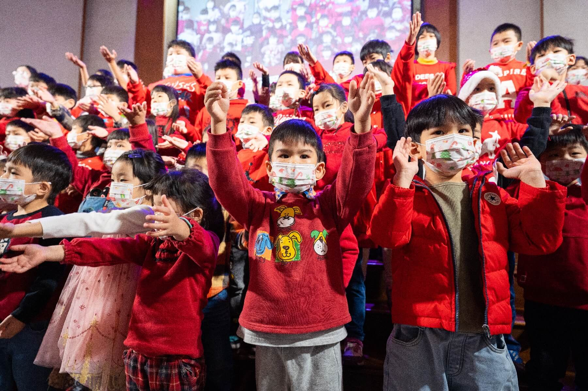

聖誕節：整個12月都在佈道
每一年的聖誕節，整個城市都瀰漫著濃厚的聖誕氣氛，無論是不是基督徒，人們都十分樂意一同慶祝這個日子，而這正是教會向人傳揚耶穌基督、傳遞聖誕節真正意義的絕佳機會！
在整個12月，和平教會有一連串外展佈道的行動，包含：
｜亮燈歡慶｜
每年12月初，教會都會在亮燈歡慶這一天點亮聖誕燈飾，並以小組為單位，邀請所認領的對象一同來共創全台最大的薑餅城市。
每個小組會精心的設計小組時光、以溫馨而有創意的方式來分享見證與信息、進行佈道、領人歸主，並一同創作與妝點薑餅城市，而我們也將屏東在地的特色、美好的價值放入薑餅城市的規劃與燈飾的設計中，讓每一個來參與的朋友們都能被感動、被溫暖，敞開心領受救恩。
｜聖誕市集｜
自2021年開始，於教會廣場四週舉行，打造如歐洲般的小鎮市集氛圍，並且在聖誕燈飾、薑餅城市的襯托下，讓市集顯得格外溫暖。
而每一個攤位亦是經過招商與篩選，有手作文創、風格餐飲、質感設計小物、親子共創、闖關活動...等等，並串連多個品牌，進行藝文音樂表演、品牌特別活動，而聖誕市集的期程也配搭薑餅城市的展期，讓每一位朋友可以自然而然地來到教會，與朋友逛逛市集、在燈飾下拍下美麗的照片，同時一睹薑餅城市的風采。
｜聖誕報佳音｜
在教會廣場、醫院、護理之家與社區中進行聖誕報佳音，並邀請所認領的朋友一同來參與，讓這些朋友們在這個過程不但自己聽見福音，還能夠把好消息一起分享出去。
｜聖誕歡慶｜

大型的佈道會，透過音樂表演與戲劇來傳遞生命的信息，柔軟人的心，並透過短講將人帶進福音中，呼召人們打開心門、接受耶穌。並在後續持續跟進、接觸與關懷。
｜小組聖誕派對｜
以小組為單位，在各處舉辦聖誕派對，精心的佈置場地、設計流程、規劃內容，邀請所認領的人來參與，使亮燈歡慶、聖誕歡慶已經被接觸、得著的人能夠繼續的參與小組，也讓尚未被得著的人有再一次的機會被得著。也讓大家在其中建立更加深刻的情誼，分享生命見證與福音信息，呼召人們領受救恩。
透過一波又一波不斷經營平台，打造接觸外展、佈道得人的行動，在2022年的聖誕季中，上帝帶領和平教會在世界的影響力更加有所突破！在亮燈歡慶的小組時光中，共有258位新朋友決志；薑餅城市有超過12家電視與平面媒體、6個部落格採訪推薦，其中更包含知名的「食尚玩家」、「好想去喔」等節目，和平教會被列為「全台聖誕節必去打卡景點」之一！而在為期兩個週末的聖誕市集中，更有超過8100位朋友前來參與，超過1700人參與闖關活動，透過闖關來了解聖誕節真正的意義！
回上一節
下一節